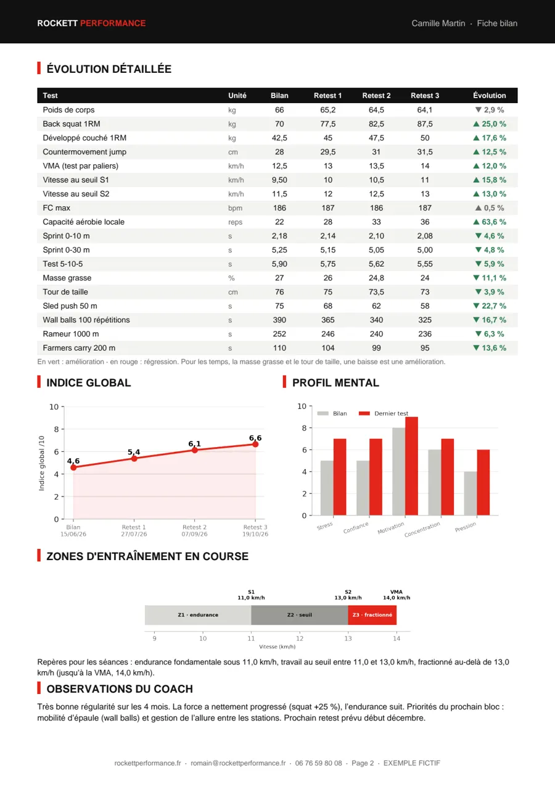

Le bilan, phase 1
Le bilan initial. La base de tout.
Avant une seule séance, on évalue. Voici la batterie complète de tests que je maîtrise. Lors de votre bilan, je sélectionne ceux qui comptent pour votre objectif ; les autres sont programmés au fil des retests.
- 6 familles de testsForce, endurance, vitesse, mobilité, composition, mental
- 2 séances d'1 hDurée du bilan
- 1 rapportLivré après chaque bilan
Chaque test, un rôle précis
Les tests sont organisés par qualité physique. Filtrez par catégorie pour explorer les protocoles.
10 tests
-
Force
Back squat 1RM estimé
Évaluation de la force maximale des membres inférieurs via un protocole sous-maximal (3 à 5 répétitions à charge connue). Pas de mise en danger, résultat fiable et reproductible.
Ce qu'on mesure
- Force max (kg)
- Ratio poids de corps
- Symétrie membres inférieurs
-
Force
Développé couché 1RM estimé
Évaluation de la force des membres supérieurs et de la chaîne poussante. Protocole identique, basé sur la relation charge–répétition validée scientifiquement.
Ce qu'on mesure
- Force max (kg)
- Ratio poids de corps
- Déséquilibre push/pull
-
Puissance
Countermovement Jump (CMJ)
Saut vertical avec contre-mouvement pour mesurer la puissance explosive et la qualité du cycle étirement-détente (SSC). Référence en préparation physique de haut niveau.
Ce qu'on mesure
- Hauteur de saut (cm)
- Indice RSI
- Puissance relative (W/kg)
-
Endurance
Test aérobie progressif par paliers
Protocole par paliers progressifs (course ou vélo) pour déterminer les seuils ventilatoires S1 et S2. Permet de définir des zones d'entraînement individualisées et précises.
Ce qu'on mesure
- FC aux seuils
- VMA ou PMA estimée
- Zones d'effort personnalisées
-
Endurance musculaire
Capacité aérobie locale
Épreuve de type temps limite à charge fixe pour évaluer la résistance à la fatigue musculaire locale et le système énergétique glycolytique.
Ce qu'on mesure
- Répétitions / temps tenu
- FC de récupération
- Profil de fatigue
-
Vitesse
Sprint 10 / 30 mètres
Mesure de la vitesse de démarrage (0–10 m) et de la vitesse de pointe (10–30 m). Différencie les profils « démarreurs » des profils « lancés », clé pour les sports collectifs.
Ce qu'on mesure
- Temps 0–10 m
- Temps 10–30 m
- Vitesse max (km/h)
-
Agilité
Test d'agilité 5-10-5 (Pro-Agility)
Protocole standard NFL Combine. Mesure la capacité à changer de direction rapidement, la coordination et la qualité des appuis. Référence en football américain et sports collectifs.
Ce qu'on mesure
- Temps total (s)
- Symétrie droite/gauche
- Qualité des appuis
-
Mobilité
Screening de mobilité articulaire
Évaluation des amplitudes de mouvement clés : hanche, épaule, cheville, thoracique. Identification des restrictions limitant la performance ou exposant aux blessures.
Ce qu'on mesure
- Score par articulation
- Asymétries identifiées
- Facteurs limitants
-
Composition
Composition corporelle
Mesure des plis cutanés (méthode Jackson & Pollock) pour estimer la masse grasse, la masse maigre et le ratio puissance/poids. Données essentielles pour les objectifs de performance.
Ce qu'on mesure
- % masse grasse
- Masse maigre estimée
- Ratio puissance/poids
-
Mental
Profil psychologique du sportif
Questionnaire validé (POMS/TOPS adapté) pour évaluer l'état psychologique : niveau de stress, confiance, motivation, concentration et gestion de la pression compétitive.
Ce qu'on mesure
- Profil de motivation
- Anxiété compétitive
- Score de confiance en soi
Ce que vous recevez après le bilan
Une fiche bilan claire, que vous gardez : votre toile de performance, vos points forts, vos priorités, puis l’évolution de chaque test à chaque retest. Ci-dessous, un exemple pour une cliente qui prépare un HYROX.
 Page 1
La synthèse
Chiffres clés, toile de performance comparée au bilan initial, points forts et priorités de travail.
Ouvrir l’exemple complet →
Page 1
La synthèse
Chiffres clés, toile de performance comparée au bilan initial, points forts et priorités de travail.
Ouvrir l’exemple complet →

Page 2 Le détail de la progression L’évolution de chaque test, l’indice global, le profil mental et vos zones d’entraînement en course. Ouvrir l’exemple complet →Exemple fictif. Chaque fiche est construite à partir de vos propres résultats.
Découvrez votre profil réel.
Le bilan complet est la première étape de tout accompagnement. Réserver, c'est déjà commencer à progresser.
Réserver mon bilan